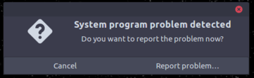

Ever since getting my first laptop a few months ago, I've been trying to learn more about computers. Taking some advice from friends who entered the game earlier than I have, I decided to throw myself in at the deep end and learn to live on Linux.
For the past few months, Ubuntu has been my default distro for work machines and I try to fiddle around and break things, something I'm astonishingly successful at. Unfortunately, this mucking around has... consequences. The most annoying one for me, by far, has to be the process crash and error report prompts. These are not uncommon to begin with. If you’re using Ubuntu on your machine, it is very likely you’ve encountered one of these bad boys at some time or the other -
EDIT: Changing the image to reflect my new UI 😎

Why do they show up?
The reason they pop up is usually due to a program crashing. And if you’ve been messing around with the system, you’ve likely made changes that lead to more undefined behavior and thus, more crashes.
Ubuntu has an error reporting system called apport which tries to catch all program crashes in the background and report them to help the developers fix the OS. These crash reports are created inside /var/crash, from where apport reads them. They remain stuck there because the OS has no implemented way to remove them automatically. And since apport is run on boot, this annoying alert is the first thing you’ll see thereafter when you log in.
Make it go away !
So, how to make it go away? The gentler way to rid yourself of them would be to manually remove the old crash reports inside /var/crash. Open a terminal and type -
~$ sudo rm /var/crash/*
After a reboot the popups are gone. If you don't want to reboot, you can close all open popups with -
~$ killall system-crash-notification
Want to make a permanent solution to take care of all future crash prompts? Just make sure you run sudo rm /var/crash/* on shutdown / reboot / logout. Of course, not manually - setup a cron job. Exercise for the reader, and all that.
Another (unadvisable) way of preventing future crash prompts would be to disable error reporting itself. If you like to live dangerously, edit the configuration file at /etc/default/apport
~$ sudo gedit /etc/default/apport
That file's contents should look like -
# set this to 0 to disable apport, or to 1 to enable it
# you can temporarily override this with
# sudo service apport start force_start=1
Follow the instructions in the comments and that's it! No more pesky crash prompts.